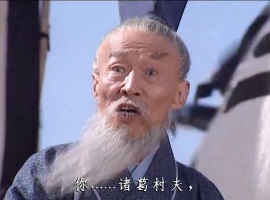

在這裡我會挑出幾個來源自電視影劇，後來因為演出太具特色而被加入全明星的人物作為例子簡單介紹。
以下我舉出其中比較出名的兩個素材做簡易的介紹。
諸葛亮 & 王朗
|
素材起源於中國在1994年拍的電視劇《三國演義》，而這段素材裡最有名的就是諸葛亮的一句台詞"我從未見過如此厚顏無恥之人!"。 |
|
|  |
劉醒 & 梁非凡
|
起源自TVB電視劇《巾幗英雄之義海豪情》第六集中警察隊科長梁非凡故意刁難刑警隊隊長劉醒引發兩人爭吵的片段。 |
|